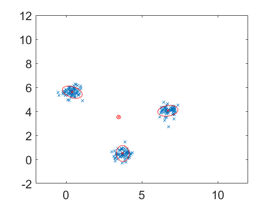

clear all
close all
load yrep
figure
plot(y(:,1),y(:,2),'x');
hold on
m_model=5;
disp('Two-dimensional data with three clusters');
disp(sprintf('Assumed model has %d clusters',m_model));
disp('VB GMM code');
vbmix=spm_mix(y,m_model);
for i=1:m_model,
plot(vbmix.state(i).m(1),vbmix.state(i).m(2),'rx');
end
hold on
spm_mix_plot2d(vbmix,[-2 12 -2 12],1,'r',0.4,0.5);
set(gca,'FontSize',18);
Two-dimensional data with three clusters
Assumed model has 5 clusters
VB GMM code
Kmeans init: retry 1 out of 10, sumd=28712.79
Kmeans init: retry 2 out of 10, sumd=23087.82
Kmeans init: retry 3 out of 10, sumd=23741.06
Kmeans init: retry 4 out of 10, sumd=29164.75
Kmeans init: retry 5 out of 10, sumd=21034.90
Kmeans init: retry 6 out of 10, sumd=22326.27
Kmeans init: retry 7 out of 10, sumd=19910.96
Kmeans init: retry 8 out of 10, sumd=24015.94
Kmeans init: retry 9 out of 10, sumd=21679.16
Kmeans init: retry 10 out of 10, sumd=23329.69
Iter=1, F1=-386.47, F2=-1171.90, F3=-81056.22, F4=-508.66, F5=-107.88, Fm=-83231.14
Iter=2, F1=-9.62, F2=-16.59, F3=-75.55, F4=-222.07, F5=-146.55, Fm=-470.37
Iter=3, F1=-9.62, F2=-16.59, F3=-75.55, F4=-222.07, F5=-146.55, Fm=-470.37
